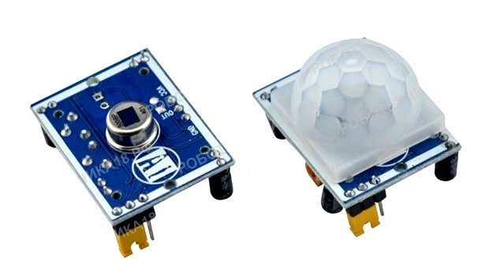
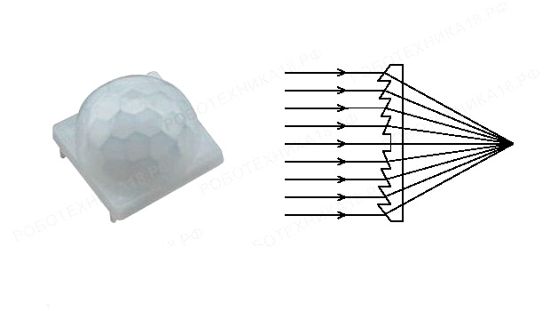

Ինչպես միացնել շարժի սենսորը Arduino-ին
Այս հոդվածում կքննարկենք շարժման սենսորային սարքը, Arduino UNO-ին դրա միացման դիագրամը և դրա հիման վրա կհավաքենք ավտոմատ լուսային անջատիչ:

PIR սենսորային մոդուլը բաղկացած է պիրոէլեկտրական տարրից՝ պլաստիկ ոսպնյակի տակ՝ գլանաձև կտոր, որի կենտրոնում ուղղանկյուն բյուրեղ է, որը ընկալում է ինֆրակարմիր ճառագայթման մակարդակը և անցկացնում իր միջով: IR-ը Arduino-ին միացնելիս մենք արդեն պարզել ենք, որ բոլոր օբյեկտներն ունեն ինֆրակարմիր ճառագայթում, և որքան բարձր է ջերմաստիճանը, այնքան ավելի ինտենսիվ է ճառագայթումը:
PIR շարժման սենսորները դիզայնով գրեթե նույնական են: Arduino-ի համար PIR սենսորների զգայունության տիրույթը մինչև 6 մետր է, դիտման անկյունը՝ 110° x 70°: Հզորությունը 5 վոլտ է, իսկ թվային ելքը 0 է, երբ շարժում չկա և 1, երբ շարժում կա: Զգացող տարրերը տեղադրվում են հերմետիկ պատյանում, որը պաշտպանում է խոնավությունից և ջերմաստիճանի ծայրահեղություններից:
Անհրաժեշտ էլեմենտներ
- Arduino Uno / Arduino Nano / Arduino Mega;
- PIR շարժման ցուցիչ HC-SR501;
- breadboard
- 1 լեդ և 220 Օմ դիմադրություն
- լարեր «պապա-պապա», «պապա-մամա»
Մեկ ելքը գնում է GND, երկրորդը գնում է 5 վոլտ սնուցման (VCC), իսկ երրորդ ելքը (OUT) դուրս է բերում թվային ազդանշան PIR սենսորից:
#define PIR 2
#define LED 12
void setup() {
pinMode(PIR, INPUT);
pinMode(LED,OUTPUT);
}
void loop() {
int pirVal = digitalRead(PIR);
if (pirVal == HIGH) {
digitalWrite(LED, HIGH);
delay(2000);
}
else {
digitalWrite(LED,LOW);
delay(2000);
}
}
PIR շարժման սենսորով լամպի նախագիծ
#define LED 3
#define PIR 2
unsigned long counttime;
void setup() {
pinMode(LED, OUTPUT);
pinMode(PIR, INPUT);
}
void loop() {
if (digitalRead(PIR) == HIGH) {
digitalWrite(LED, HIGH);
}
counttime = millis();
if (digitalRead(PIR) == LOW && millis() - counttime > 60000) {
digitalWrite(LED, LOW);
}
}
Կոդի մեկնաբանություն
- counttime = millis();ֆունկցիայի օգնությամբ սկսում ենք հետհաշվարկը։ Եվ ի տարբերություն Arduino delay ֆունկցիայի , որն ամբողջությամբ ընդհատում է ծրագիրը, այս ֆունկցիայի դեպքում միկրոկառավարիչը կարող է շարունակել մնացած հաշվարկները նախագծում:
- մենք փոխել ենք լամպի անջատման ժամը։ Եթե առաջին օրինակում լեդն անջատվել է սենսորից LOW ազդանշանից անմիջապես հետո: Հիմա լամպը անջատելուց առաջ տալիս ենք 1 րոպե